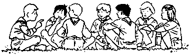

Wie zijn we en wat doen we ?
De Vleermuis hoort samen met nog een heleboel andere Scouts en Gidsen bij FOS, de federatie voor Open Scouting.
Om het spel Scouting te spelen gaan we als volgt te werk...
Dit zijn onze takken
- 6-7 jaar: De fantasiewereld van de Bevers
- 8-10 jaar: Het junglespel van de Welpen, met Akela, Baloe, Bagheera en vele anderen
- 11-13 jaar: Met je patrouille bij de Jongverkenners/Jonggidsen op tocht en kamp, met kaart, kompas en knopen
- 14-15 jaar: Op weg naar zelfstandigheid bij de Verkenners/Gidsen
- 16-17 jaar: Op zoek naar jezelf en de andere bij de Seniors
- 18+: Werk en bouw mee aan De Vleermuis, als leiding, stammer, materiaalmeester, Bat Parent, secretaris, kok, fourier, klusjesman ...
Dat spel spelen we elke week, op weekends en op groot zomerkamp, in duizenden kleine spelen, bosspel, technieken, tochten, expressie ...
Het is gebaseerd op zeven basispijlers
- Engagement: jij en ik gaan ervoor!
- Teamwork: we doen het samen
- Medeverantwoordelijkheid: jij telt mee
- Zelfwerkzaamheid: jij zet je in
- Dienst: we doen het voor elkaar en de andere
- Openheid: iedereen telt mee, ongeacht ras, overtuiging of geloof
- Coëducatie: jongens en meisjes samen
Elk jaar gaan we op kamp: tijdens het jaar gaat elke tak op weekend in het najaar, we organiseren ongeveer elk jaar een Eenheidsweekend in het voorjaar, rond Pasen zijn er paaskampen, takweekend en zelfs af en toe een midweek en de eerste 11 dagen van juli gaan we op zomerkamp.

Als je al eens mensen van onze eenheid tegen het lijf bent gelopen, dan heb je waarschijnlijk gemerkt dat we een ras apart zijn en misschien wel omdat…
- we slechts 8 jaar bestaan en daarvan bezig zijn aan het vijfde binnen FOS
- van die keuze hebben we nog geen seconde spijt gehad
- we gestart zijn als een eenheid binnen VVKSM en daar nog veel leuke herinneringen aan overgehouden hebben
- we inhoud belangrijk vinden maar eveneens veel aandacht besteden aan de verpakking
- we houden van ambiance en feestjes bouwen
- we een hele boel gemotiveerde leiding, ouders en leden hebben die actief zijn in alle lagen van FOS
- onze eenheidscultuur eigenzinnig, ambitieus, enthousiast & (zelf)kritisch is en we graag anders dan anders uit de hoek willen komen
- we houden van kampvuurtjes
- drie vierde van alle zoogdieren een vleermuis is en dat echt nuttige en lieve beestjes zijn
- mocht dit niet het geval zijn dan ben je bij deze uitgenodigd om te ontdekken of dat wel allemaal klopt
- mocht je nog andere redenen hebben die ontbreken dan luisteren we met veel plezier...
Meer info, ons programma en onze agenda kan je vinden in ons eigen tijdschrift 'Infovleratie', en op deze site natuurlijk.